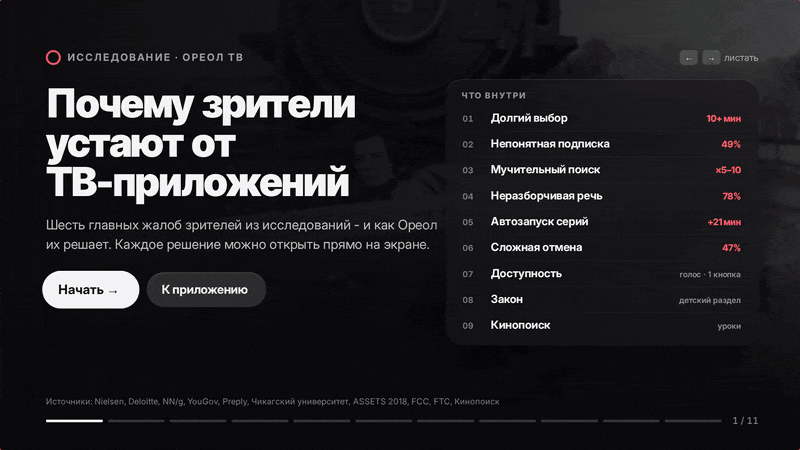
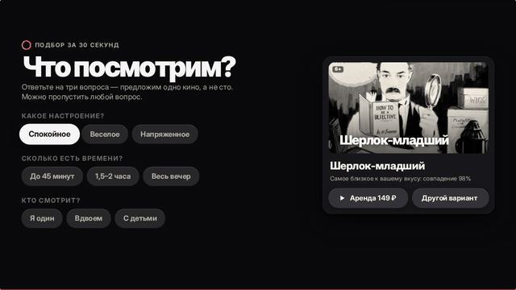
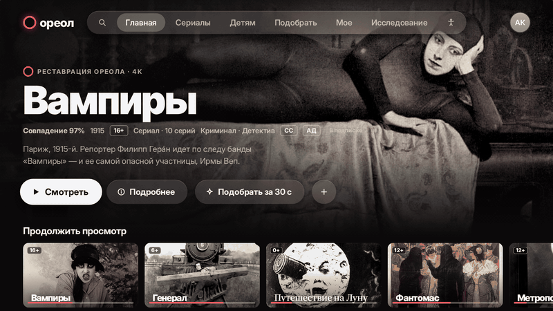
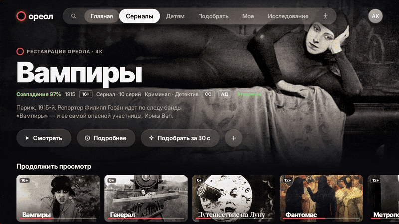
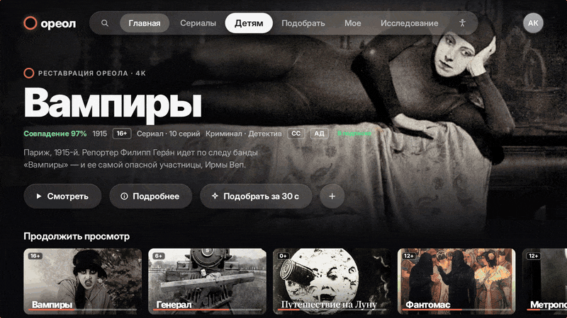
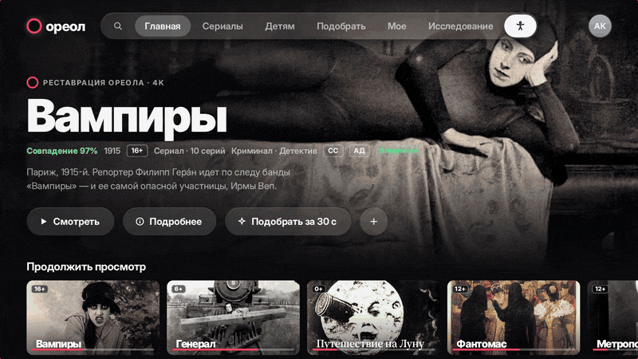
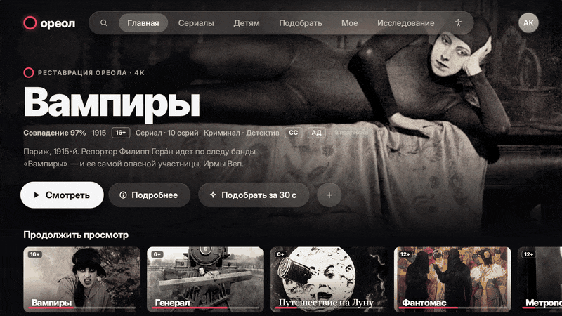
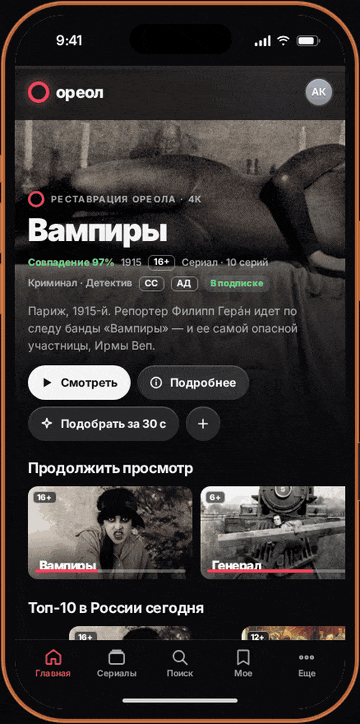

Ореол ТВ - Smart TV-приложение онлайн-кинотеатра
 FIG. 01.0
FIG. 01.0
Бриф
Онлайн-кинотеатр для телевизора. Пульт с пятью кнопками вместо мыши и клавиатуры, зритель - в трех метрах от экрана, рядом семья.
Задача - убрать то, за что зрители ругают ТВ-приложения: долгий выбор, непонятные цены, мучительный поиск, неразборчивую речь, бесконечный автозапуск и сложную отмену подписки.
Подход
Начала с исследования: собрала шесть самых частых жалоб из отчетов Nielsen, Deloitte, Nielsen Norman Group, YouGov, Preply и Чикагского университета. На каждую жалобу - одно решение в интерфейсе, которое можно показать прямо на экране.
Результат
Рабочий прототип на 1920×1080: навигация с пульта, состояния фокуса, 15+ экранов, светлая и темная тема и мобильная версия под iPhone. Исследование встроено в сам интерфейс - кейс можно презентовать прямо с телевизора.
Открыть прототип >>>Шоурил
[ 09 сцен · Записано в прототипе ]
FIG. 01.1Шесть проблем - шесть решений. Каждое открывается кнопкой «Показать на экране», прямо поверх слайда.

FIG. 01.2Три вопроса - настроение, время, кто смотрит - вместо получаса листания каталога.

FIG. 01.3Субтитры и тифлокомментарии - в одно нажатие. Перед следующей серией - 10 секунд и «Хватит на сегодня».

FIG. 01.4Фильтры по жанрам и отдельный фильтр «С тифлокомментариями» - то, чего не хватает Кинопоиску.

FIG. 01.5Возраст на каждой обложке, игры без покупок и чата. Выйти из профиля и купить - только с ПИН-кодом взрослого.

FIG. 01.6Озвучка всего, что в фокусе, управление одной кнопкой, крупный текст и высокий контраст.

FIG. 01.7«Найди комедию» - и запрос уже набран. Без букв на экране и стрелок.

FIG. 01.8Мобильная версия: нижняя панель из пяти вкладок, безопасные зоны iOS, выбор профиля в духе Apple TV.
Исследование
[ 06 болей · 06 решений ]«Полчаса выбираю - и ничего не включаю»
Кнопка «Подобрать за 30 секунд»: три вопроса и одно готовое кино. Nielsen
«Не понимаю, что входит в подписку»
На каждой карточке - «В подписке» или «Аренда · 199 ₽». Цена видна до нажатия. Nielsen
«Набирать название пультом - мучение»
Результаты после каждой буквы, поиск голосом, набор с телефона по QR-коду. Nielsen Norman Group
«Не разобрать, что говорят герои»
«Разборчивая речь» и субтитры - прямо в плеере, в одно нажатие. Preply · YouGov
«Хотела одну серию - посмотрела четыре»
Трейлеры не запускаются сами. Перед следующей серией - 10 секунд и «Хватит на сегодня». Чикагский университет
«Плачу слишком много, а отменить сложно»
В «Мое» видно цену и дату списания. Пауза или отмена - в два нажатия. Deloitte
Доступность
Незрячие люди активно пользуются голосовыми помощниками, но им мешает, что нельзя ускорить речь и сократить длинные ответы. Поэтому озвучка в Ореоле говорит «3 из 10», а скорость и подробность настраиваются.
Для тех, кто может нажать только одну кнопку, - режим сканирования: подсветка сама идет по рядам, потом по карточкам. Для тех, кто не хочет печатать, - голос, ввод с телефона и подбор без поиска.
Закон
Детский раздел собран по требованиям 436-ФЗ, 152-ФЗ и 38-ФЗ, а также европейских EAA и DSA, британского кодекса ICO и американских CVAA и COPPA: возраст на каждой обложке и перед показом, данные ребенка - только с согласия родителей, без рекламы, автозапуска и покупок без ПИН-кода.
Уроки Кинопоиска
Взяли: субтитры для глухих и тифлокомментарии с первого дня и настройки доступности, которые живут в профиле. Сделали лучше: фильтр «С тифлокомментариями», метки АД и СС на карточках и кликабельные жанры - то, за что критикуют Кинопоиск HD.
Система
Навигация с пульта по карте D-pad: у каждого ряда своя память фокуса, фокус держится во второй позиции, на краю - упругий отскок. Пружинная анимация в духе Apple TV, стеклянные материалы, светлая и темная тема.
Шрифты - Inter с оптическими размерами (ближайший открытый аналог SF Pro) и Inter Tight Black для заголовков в духе Netflix Sans. В кадрах - фильмы из общественного достояния.
Сделано
UX-исследование · информационная архитектура · карта D-pad навигации · состояния фокуса · UI 15+ экранов · интерактивный прототип · мобильная версия · доступность.